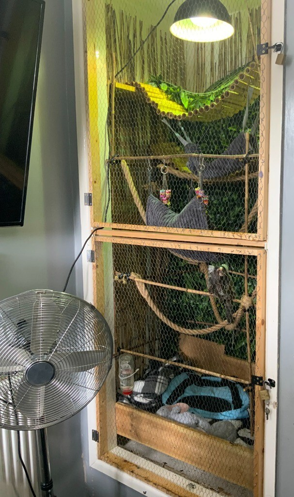
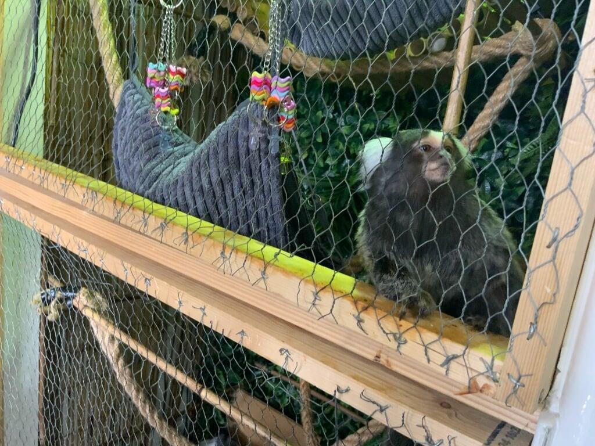

Complex care
Common marmosets need heat, careful diets, enrichment, observation and specialist husbandry.
Primate Sponsor
Hugo and Worm are common marmosets with specialist needs. Sponsorship helps cover daily care, enrichment, veterinary support and the new warm indoor plus secure outdoor enclosure being built as APES moves to new premises.
Common marmosets need heat, careful diets, enrichment, observation and specialist husbandry.
Sponsorship helps fund a connected indoor and outdoor enclosure for long-term welfare.
APES wants to show why primates do not belong in ordinary living rooms and why correct care is hard to deliver.
Sponsors can follow Hugo and Worm as the enclosure build and pairing work progresses.
Hugo was purchased for a man's son in his 20s. He was reportedly brought over in his mum's tummy and born in the UK after the mother disowned baby Hugo, most probably due to the stress of being stolen from the wild and exported to the UK. The keeper of the mother hand-raised him until he was sold to the man and his son.
His son kept him in the enclosure shown below and, once he moved his pregnant girlfriend into the room, Hugo changed, becoming aggressive to females and urinating at the girlfriend from across the room in his cage. They surrendered him to APES after not being able to find anywhere else.
Photos of Hugo and his enclosure before surrender.




Marmosets are highly social and need environments far beyond a normal home set-up.
The public guidance reviewed for this page notes that a private primate licensing regime in England applies from 6 April 2026.
APES plans to explain correct care standards without judgement so more people understand the real welfare picture.
Support helps fund heat, mesh, safe fixtures, climbing structures and vet-friendly access points.
Milestones can then be passed on through APES News and sponsor updates.
Please sponsor Hugo and help with feeds, cleaning, enclosure maintenance and the work needed to give him a safer future.
Please sponsor Worm and help with feeds, cleaning, enclosure maintenance and the patient, long-term recovery support he needs.
Primate sponsorship funds are intended for their care and housing, including vet costs, enrichment and build materials. If urgent welfare needs ever require funds to be redirected, APES should be transparent about that.
Yes. Ethical corporate support can help fund materials, indoor fit-out work or enrichment packs. The support page and sponsor updates will keep expanding as the wider system is rebuilt.